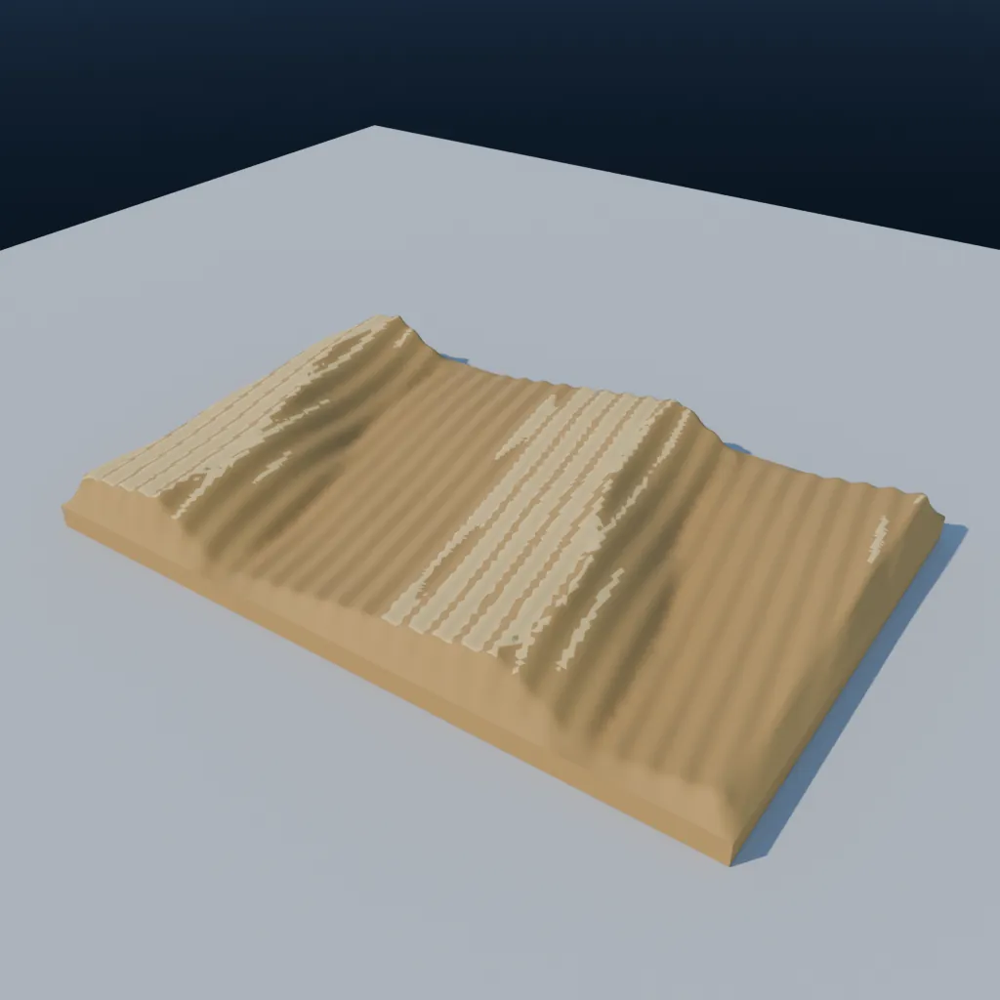
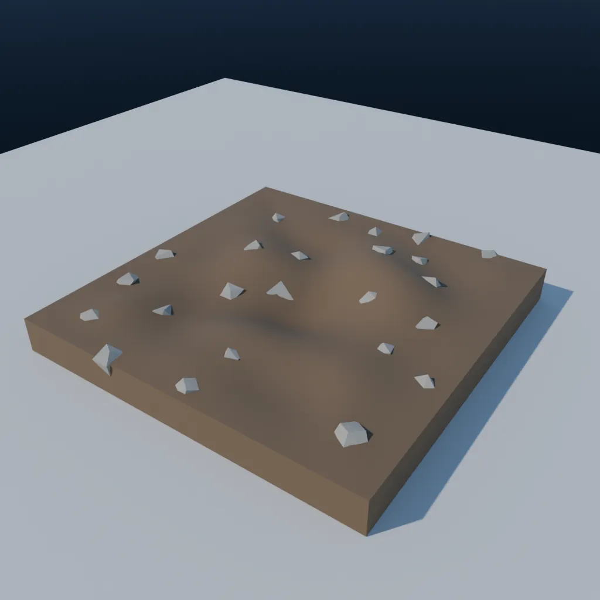
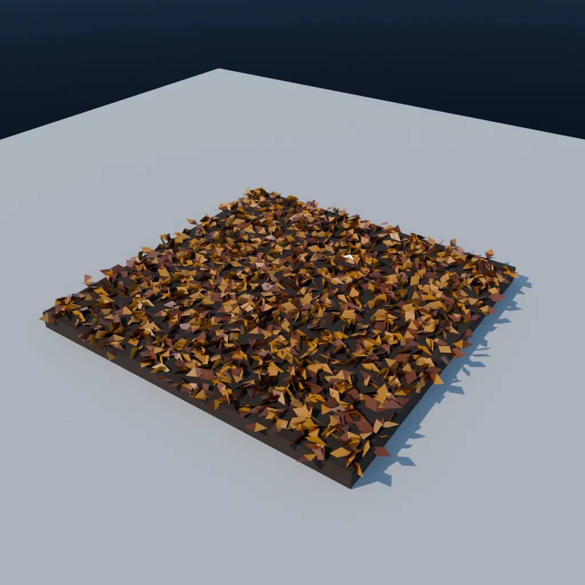

Start with a solid support, shape its top, then sample that surface to place its cover. Stones, leaves, snow and dunes should belong to the ground beneath them.

A first patch of ground

import sand3d as s3d
def ground_stones(seed=0):
ground = s3d.box("ground", 800, 800, 80)
s3d.displace(ground, 85, 240, faces="top", direction="+Z", step=30, seed=seed+1)
s3d.material(ground, "soil", color="#66513b")
sites = s3d.Frames(f for f in s3d.scatter(240, ground, seed=seed+4) if f.normal.z>.85)[:24]
stones = []
for i, (site, size) in enumerate(zip(sites, s3d.vary(65, 20, len(sites), seed=seed+5))):
points = s3d.scatter(8, (size, size, size*.7), surface=True, seed=seed+100+i)
stone = s3d.hull("stone", [tuple(f.origin) for f in points])
stones.append(s3d.at(stone, on=site.offset(-size*.15)))
rocks = s3d.group("rocks", *stones)
s3d.material(rocks, "rock", color="#8c8376")
return s3d.group("strewn_ground", ground, rocks)
A supported solid with displaced top faces. Stones sit on samples of the resulting mesh, including its slopes.
Make the terrain wide enough to carry its subject. Displace its top faces and keep the underside flat; avoid hidden floating islands beneath props. displace explains the sampling step and face restriction.
Seat objects on the actual surface
Never calculate a stone's landing height from the noise formula that shaped the terrain. Refinement, smoothing and earlier edits can change the surface. Sample the mesh itself instead.
Ask scatter for about ten times the number of sites you want, within its 4096-per-call limit. It samples the whole closed surface, including the sides and underside.
Filter by f.normal for slope and f.origin for position. For a maximum slope angle, require f.normal.z > math.cos(math.radians(steepest)); a test such as abs(f.origin.y) > channel keeps a channel clear.
Count the survivors, then take the number you need. Vary sizes with a separate seed.
Place each object with at(ob, on=site). It stands along the site's local normal. site.offset(-d / 4) sinks it a quarter of its size into the ground.
Covers belong to the ground. A dark carrier visible in the gaps reads as depth, so fill the view, not every gap.
Use one-blade tufts for leaves: two triangles per leaf, width about half the length. A tangent direction field with a random azimuth and slight normal lift lays their long axes nearly along the ground. Subtract the normal component from a horizontal direction, then add a small amount of the normal back. Blade widths still rotate around those axes, so some leaves tilt: this makes loose litter, not flat sheets conforming to the ground. Use separate leaf geometry with lay when full surface contact matters.

import numpy as np
import sand3d as s3d
def litter(seed=0):
ground = s3d.box("soil", 800, 800, 40)
s3d.material(ground, "soil", color="#332518")
sites = s3d.Frames(f for f in s3d.scatter(4096, ground, seed=seed+10) if f.normal.z>.7)
leaves = s3d.tufts("leaves", sites, height=42, width=24, blades=1, lean=12, direction=flat, seed=seed+20)
s3d.material(leaves, "leaf", color=lambda x,y,z,n: np.where(
(s3d.noise(x/23,y/23,0,seed=2)>0)[:,None], [.70,.45,.12], [.42,.20,.06]))
return s3d.group("leaf_litter", ground, leaves)
def flat(x, y, z, n):
a = 6*np.pi*(.5+.5*s3d.noise(x/9.7,y/9.7,0,seed=1))
t = np.stack([np.cos(a), np.sin(a), 0*a], 1)
n = np.asarray(n).T
return t - np.sum(t*n,1)[:,None]*n + .12*n
One mesh of short leaves, with two autumn tones selected by noise. The dark soil stays visible between them.
For dense litter, combine a few surface samples of 4096 sites with different seeds. The source guide reports roughly 5,500 accepted leaves on 0.64 m² from three calls, about 14k triangles including its support and details. These are scene measurements, not a guaranteed acceptance rate. A sparse patch needs only a few dozen leaves. Use two or three autumn tones by noise and add a few twigs at their sampled site's height, for example cylinders turned with ry=90.
Gravel
The bed does much of the work. Give the ground fine relief with features about three grains wide and a dark per-face speckle. Add pebbles made with hull from eight surface points, about 12 triangles each when all points remain hull vertices. Sink them with at(p, on=site.offset(-d * .15)), then put one material on their group.
Pebbles smaller than roughly 1/25 of the patch width can disappear at render size. The source guide's 800 mm patch used 450 pebbles of 30–60 mm and cost about 25k triangles with the bed. For sparse gravel, try 20–30 larger pebbles on soil. The first example uses that smaller arrangement; its final count depends on the accepted sites.
Snow
A blanket is the ground mesh with the snow preset, not a second layer floating above it. Shape drifts with a callable returning 0..1. Named Perlin noise seldom reaches the requested displacement amount: in the source guide's 800 mm example with two broad features, an amount of 45 mm produced at most about 10 mm of rise.
Positive noise makes mounds. Low side faces retain soil colour, while surface normals tint the snow from blue-grey on slopes to pale on top.
Flat white hides relief. Tint slopes blue-grey using the normal and keep the soil colour on sides below the snow line. Snow on objects can be colour selected by n[2], the upward normal component. A dusting needs colour only: mix soil toward white using noise multiplied by n[2] ** 4 on upward-facing surfaces. Face size sets the grain of this per-face colour.
Sand, dunes and wind ripples
Separate three scales of relief: low-frequency noise for the broad ground, an asymmetric dune profile, then smaller wind ripples. Apply all three to the top of a supported solid. Keep the underside flat.
Windward slopes are long and gentle; a dune's slip face is short, near 32 degrees, or a rise/run of about .625. A symmetric sine makes ripples, not that dune profile. Bend the crest sideways so it reads as a dune rather than a straight ramp.
Sinuous dunes
A slow rise over four fifths of each period, a short slip face, then a separate wave field for surface ripples.
The example's 200 mm height over a 320 mm slip-face run gives about 32 degrees before other relief and the boundary fade. Its sine bends the crest across the patch. Colour uses both height and normal to highlight high crests, rather than every upward-facing face.
The source recipe budgets about 35k triangles. Ripple relief below roughly 1/400 of the scene width can vanish at render size: 3 mm on a 3 m patch did in the source trial. This example uses 8 mm ripples. Budget ripple sampling across the whole ground. The sand material gives the rough response; do not model individual grains. See waves for the wave field and displace for refinement controls.
Scenes to adapt
Stones on uneven soil
Change the ground shape without rewriting the placement formula: sites come from its mesh.
The program, 16 lines
import sand3d as s3d
def ground_stones(seed=0):
ground = s3d.box("ground", 800, 800, 80)
s3d.displace(ground, 85, 240, faces="top", direction="+Z", step=30, seed=seed+1)
s3d.material(ground, "soil", color="#66513b")
sites = s3d.Frames(f for f in s3d.scatter(240, ground, seed=seed+4) if f.normal.z>.85)[:24]
stones = []
for i, (site, size) in enumerate(zip(sites, s3d.vary(65, 20, len(sites), seed=seed+5))):
points = s3d.scatter(8, (size, size, size*.7), surface=True, seed=seed+100+i)
stone = s3d.hull("stone", [tuple(f.origin) for f in points])
stones.append(s3d.at(stone, on=site.offset(-size*.15)))
rocks = s3d.group("rocks", *stones)
s3d.material(rocks, "rock", color="#8c8376")
return s3d.group("strewn_ground", ground, rocks)
A snow blanket
The same supported-solid method, with positive drift displacement and normal-based colour.
 sand3d
sand3d GitHub
GitHub